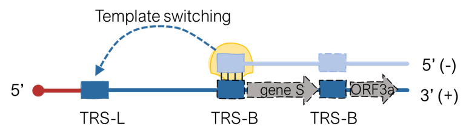
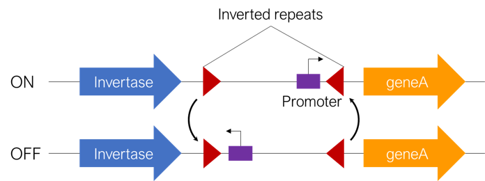

Code
We are a computational genomics group and develop methods and tools to analyze microbial and viral genomic data. All of our code is open source and available on Github. Click on the badges below to learn more about the methods we developed.
Evolink 
A python script for rapid identification of genotype-phenotype associations in large-scale microbial multi-species data.


Evolink is a phylogeny-based tool that detects genotypes associated with a phenotype in multi-species datasets by using phylogenetic information to control for population structure, avoiding spurious findings. It outperforms similar tools in accuracy and efficiency.
SuPER 
A command-Line tool to identify TRS-B sites in coronavirus genomes.
SuPER is used to identify TRS-B sites in coronavirus genomes. SuPER first uses a covariance model derived from Rfam to identify TRS-L via profile-based sequence and structure scoring. Then, SuPER identifies TRS-B sites either by identifying template switching junctions using RNA-seq data or in by identifying sequences preceding genes that are found to be similar to the TRS-L CS sites.
CoV-Dist
A python script to measure the dissimilarity distance between SARS-CoV-2 metagenome samples.
CoV-Dist was developed to fill the need for an approach to perform pairwise comparisons of amplicon sequenced SARS-CoV-2 samples. This tool calculates the Yue and Clayton dissimilarity index of SARS-CoV-2 metagenomic samples relative to a reference sequence and outputs a distance matrix that can be used for sample level comparisons and visualization.
PhaseFinder 
A command-Line Tool for detection of DNA inversion mediated phase variation in bacterial genomes.
PhaseFinder is designed to detect DNA inversion mediated phase variation in bacterial genomes using genomic or metagenomic sequencing data. It works by identifying regions flanked by inverted repeats, mimicking their inversion in silico, and identifying regions where sequencing reads support both orientations.
ImmeDB
A database dedicated to the collection, classification, and annotation of mobile genetic elements (MGEs) from gut microbiome.

ImmeDB (Intestinal microbiome mobile element) is comprised of all MGEs identified with a “deletion-based” method. This novel method allows identifying the exact mobilizable unit of active MGEs. In total 4928 putative MGEs were identified and classified into seven classes: integrative conjugative elements, integrative mobilizable elements, prophages, group II introns, transposons, unclassified genomic islands and unclassified islets.